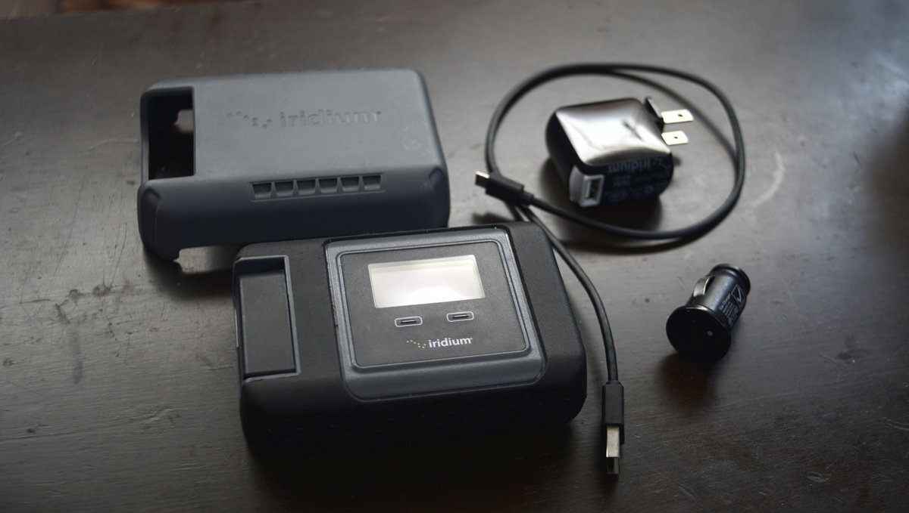

satellite phone
From 2016 to 2020, we used a Iridium GO! satellite phone to relay our position to our land crew (Devine's dad), and to communicate with our friends and family via SMS & emails, from anywhere in the world—even the middle of the ocean.
Satellite phones lists positions in decimal degrees. To convert positions to degrees minutes seconds(Navionics coordinate format), use this formula:
d = M.m / 60 Decimal Degrees = Degrees + .d Example: To convert 124° 44.740, a DMS coordinate, to DD. 44.740(m.m) / 60 = 0.74566667 124(degrees) + 0.74566667(.d) = 124.0.74566667 And so 124° 44.740 is 124.0.74566667 in Decimal Degrees.
Satellite phones are an expensive option (costs around about 100US$/month), and should you choose to go this route we recommend getting an unlimited plan, because data minutes run out quickly. The Iridium connects to overhead satellites and demands a stable connection to download weather data, like GRIB files, or to fetch webpages.
Iridium Mail and Iridium Go! applications. We used the Iridium Mail and Iridium Go! apps to make requests. We would connect our old Ipad to the Iridium Go unit via Wifi, if the Ipad is connected the Iridium Go unit will show a little 1 in the overhead bar on the screen, otherwise it will read zero. The Iridium Go! app is useful to send quick sms messages, if using the Iridium Mail application the Iridium Go! application must be opened first, and the connection needs to be green(on the top left part of the UI). We used Iridium Mail to send emails to request weather, or webpages. We send an email, then start an internet call on the Iridium unit. The device needs to register more than 2 bars of signal to make a successful call. Once the signal is good and that the internet call is in progress, click Get mail and wait for the transaction to go through, it can take a while. The application may send the email and then receive the reply right away, it may send the email and finish the transaction, if this happens you will have to press get mail again. Once you receive the reply email, and that the log tells you the transaction is finished, close the internet connection on the Iridium Go unit, or fold the antenna down, doing this will shut down the device.
Our experience. During our north pacific ocean crossing, we bought blocks of data that we thought would be sufficient for a 2-month long sail, but we ran out at the start of the second month. Our connection was often poor, and the Iridium continues to gobble up minutes even when failing to send or receive data (a poor system, really). Getting additional data was complicated, and expensive. We let our unlimited plan expire in 2019, because we knew we wouldn't be sailing offshore for a while and would not need it then, but SIM cards expire when you don't use them, and when renewing a plan you need to buy a new card, and have it shipped to you—which may be difficult, depending on where you are in the world. It is why people like to leave with multiple cards, so they are never stuck. A new card means paying for a high activation fee.
A satellite phone is handy at times, but not perfect. The Iridium GO companions apps for phone are absolute garbage, and was a serious point of friction for us.
Sending images? Can you send photos and documents with it? Yes, but it takes a long time, and requires a stable connection. Plus, the documents and photos need to be as compressed as possible, while being readable. We had to send authorities in Ogasawara passport scans, and entry documents after first sending it to the wrong office, had we not done this they would have fined us on arrival. It worked in the end, but it took a while (had many failed uploads). Don't even think of sending data like this without an unlimited plan.
Requesting webpages. While in Canada and the US, we occasionally bought 200-minute data cards from third party vendors to be able to get weather. Once activated, the data card expire after a certain time(for us, 6 months after activation), even if you haven't used up all of your minutes. Some anchorages in northern British Columbia and Southeast Alaska don't always have VHF reception. We would get weather data by requesting webpages from Saildocs by sending an email at query@saildocs.com with send in the body of the email followed by the requested webpage. For example:
send http://100r.co
To receive an email with all of the available commands, send a blank email to info@saildocs.com. Do not add capital letters if there aren't any, and don't add extra spaces, or make lineskips, or the command will not work.